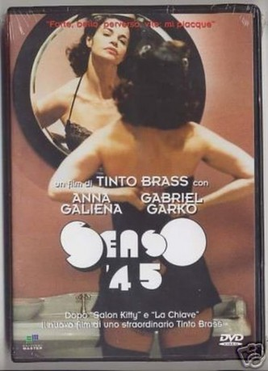

#9067 Black Angel - Senso '45
Alternativ: Black Angel (Englischer Titel)
 
 IMDB-Wertung: 5.2 / 10
IMDB-Wertung: 5.2 / 10  Metascore: 0
Metascore: 0 
Ende des 2.Weltkriegs durchlebt Livia Mazzioni mit dem Anwalt Ugo Oggiano auf einer Reise nach Venedig die Höhepunkte ihrer sexuellen Hingabe. Ugo ist ein Informant ihres Ehemanns, einem hohen Ministerialbeamten. In Venedig ist Livia mit ihrem teuflischen Geliebten, dem Wehrmachtsoffizier Helmut Schulz verabredet. Sie leben ihre glühende Liebesaffäre. Die Stadt ist zu dieser Zeit ein Tummelplatz für zahlreiche Gauner und Abenteurer. Durch überraschende Umstände wendet sich das Blatt für Livia...
Jahr: 2002
Dauer: 127 Minuten
FSK: 18
Land: Italien Studio: CMV LaservisionTonspuren:
Untertitel:
Auflösung: 1080p (1920x1080) Größe: 7833 MB
Genre: Thriller, Drama, Liebe
Regisseur: Tinto Brass
Drehbuch: Peter Dexter
Soundtrack: Ennio Morricone
Darsteller:
- Anna Galiena als Livia Mazzoni
- Gabriel Garko als Helmut Schultz
- Michela Fruet als
- Massimo Vanni als
- Lucas Di Medio als SS officer
- Tinto Brass als (uncredited)
- Franco Branciaroli als Ugo Oggiano
- Antonio Salines als Carlo
- Simona Borioni als Elsa
- Loredana Cannata als Ninetta
- Erika Savastani als Emilietta
- Sabrina Colle als
- Agostino Nani als
- Giulia De Gresy als
- Franco Barbero als
- Eleonora Mazzoni als
- Ciro Scalera als
- Maria Pia Colonnello als
- Hermann Weiskopf als
- Alessia Siniscalchi als
- Maurizio Prudenzi als
- Conchita Manfroi als
- Lele Masiol als
- Giorgia Reberschack als
- Max Parodi als
- Marina Pegoraro als
- Giuseppe Rossetto als
- Susanna Bugatti als
- Gianluca Magni als
- Francesca Tosetti als
- Mario Francini als
- Lucrezia Andreotti als
- Gianni Demartiis als
- Martina Andreotti als
- Lorenzo Vitturi als
- Isabel Vitturi als
- Alberto Garbizza als
- Jasmine als
- Osiride Pevarello als
- Carla Solaro als
- Claudio Bernabei als
- Madame X als
- Roberto Malone als
- Monica Del Pup als
- Claudio Castana als
- Carlo De Marino als
- Maria Grazia Morelli als
- Tony Leone als
- Silvana Archiapatti als
- Massimo Sangalli als
Datei: X:\FSK18-2000-2009\Black Angel - Senso '45 (2002, FSK18, 1920x1080).mkv seit 19.07.2018
Festplatte: FSK18
 Es gibt insgesamt 106 Filme in der Gruppe 'FSK18-2000-2009'
Es gibt insgesamt 106 Filme in der Gruppe 'FSK18-2000-2009'